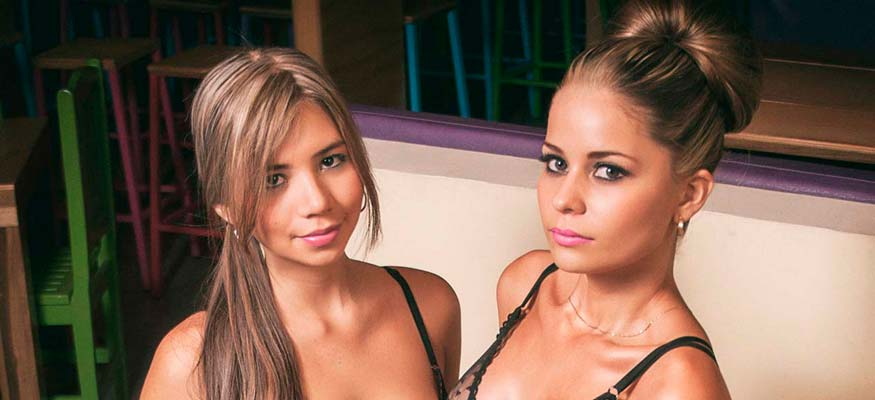

Las nuevas caras de Hot Music
Agradecimientos:
Fotógrafo Randy Ayazo
Laura Perdomo, Natalia Canizales, Maira Benavides, Laura Posada, Daniela Martínez y Marby Ramírez, son las nuevas presentadoras del programa musical Hot Music del canal Mi Gente TV.
Bajo la dirección de Lina Monroy, Hot Music es un magazín de entretenimiento musical, con toda la información actual de los artistas de Colombia y el mundo.
En el formato que es fresco y descomplicado, podrá ver a las presentadoras Laura Perdomo, Natalia Canizales, Maira Benavides, Laura Posada, Daniela Martínez, Marby Ramírez, Rosaura Perdomo y Yohanna Heredia, las dos últimas están como presentadoras desde que nació el programa hace casi dos años, realizan las entrevistas en traje de baño, dándole honor a su lema “El lado sexy de la música”.

{kind=link}
Pero llegó la hora de conocer un poco a las nuevas presentadoras:
Laura Perdomo Ramírez19 años.
Estudiante de odontología.
Entreno todos los días en el gimnasio.
Sé que como presentadora de Hot Music voy a crecer en los medios de comunicación y a ser mejor cada día, porque cuento con un equipo de trabajo espectacular.
Nasheily Natalia Canizales Meneses
21 años.
Estudiante de Administración Financiera.
Trabajo en mi propia empresa de floristería y ropa íntima femenina.
Como presentadora de Hot Music, voy a crecer como persona y aprender cosas nuevas para mi vida, me parece algo muy especial lo que hacemos en el programa y también aprovecho para dar a conocer mi empresa de ropa íntima por este medio, ya que es un programa llamativo y conocido a nivel nacional.
Laura Posada
19 años.
Normalmente voy al gimnasio, me encanta reír, bailar y dibujar.
Mis expectativas en Hot Music, es aprender y ayudar a que el programa siga adelante en todo lo que viene sin dejar de ser constante.
{kind=link}
{kind=link}
{kind=link}
20 años.
Estudiante de Comunicación Social y Periodismo.
Amo ir al gimnasio y viajar.
En Hot Music quiero aprender y adquirir todo el conocimiento que los medios de comunicación me puedan aportar.
Marby Ramírez
19 Años.
Estudiante de Enfermería.
Me encanta ir a cine.
Quiero aprovechar a Hot Music al máximo, ser muy reconocida y lograr una excelente imagen.
Maira Benavides
23 años.
Estudiante de Comunicación Social.
Me encanta estar enterada de todo lo relacionado con el crecimiento, desarrollo y motricidad de los niños ya que soy mamá de un bebé de 20 meses.
Si quiere conocer más a las nuevas presentadoras de Hot Music, las pueden seguir en hotmusictvcolombia en todas las redes sociales.